Esencial
$89.900Poplín de algodón y cartera lisa. La camisa de todos los días.
- Blanco, celeste y rayado fino
- Cierre magnético en el frente
- 6 cuotas sin interés de $14.983
Sastrería clásica con imanes ocultos donde van los botones. Para vestirte sin pedir ayuda, sin que nadie note la diferencia.
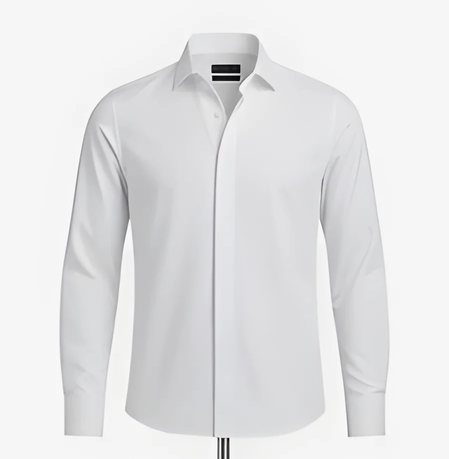
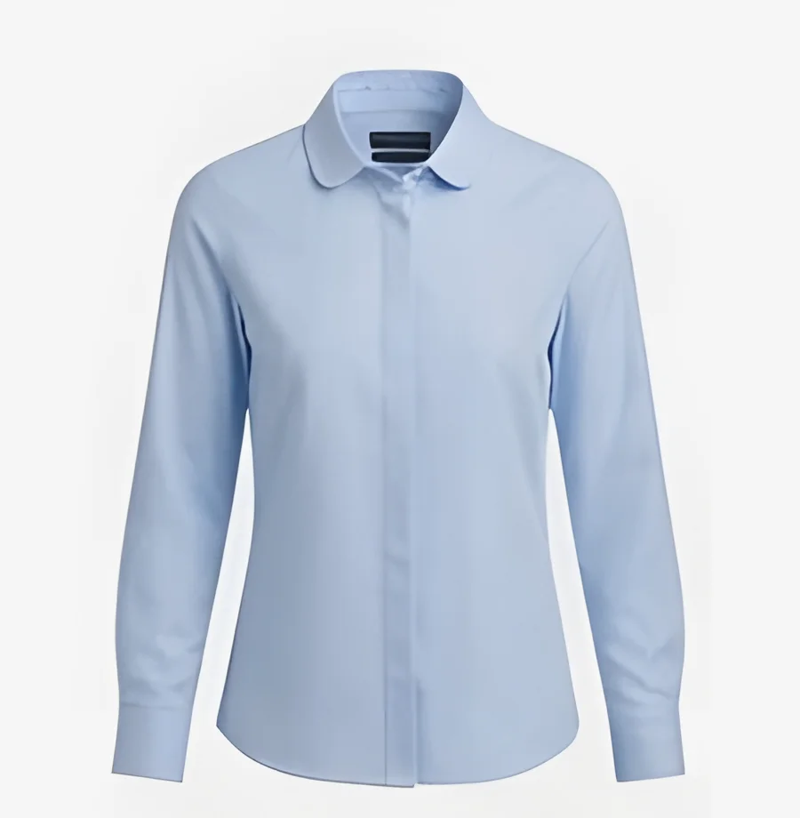
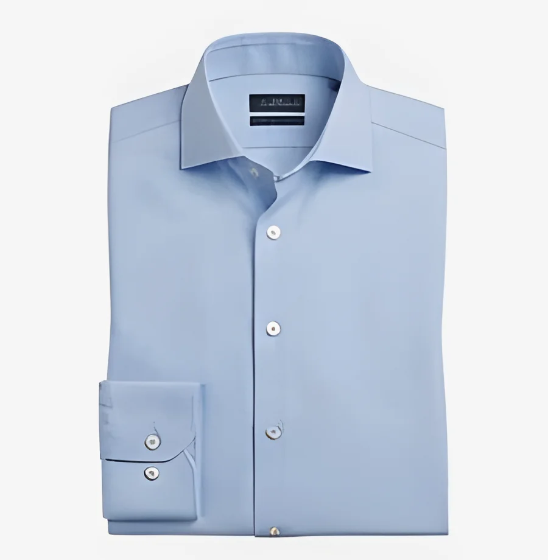
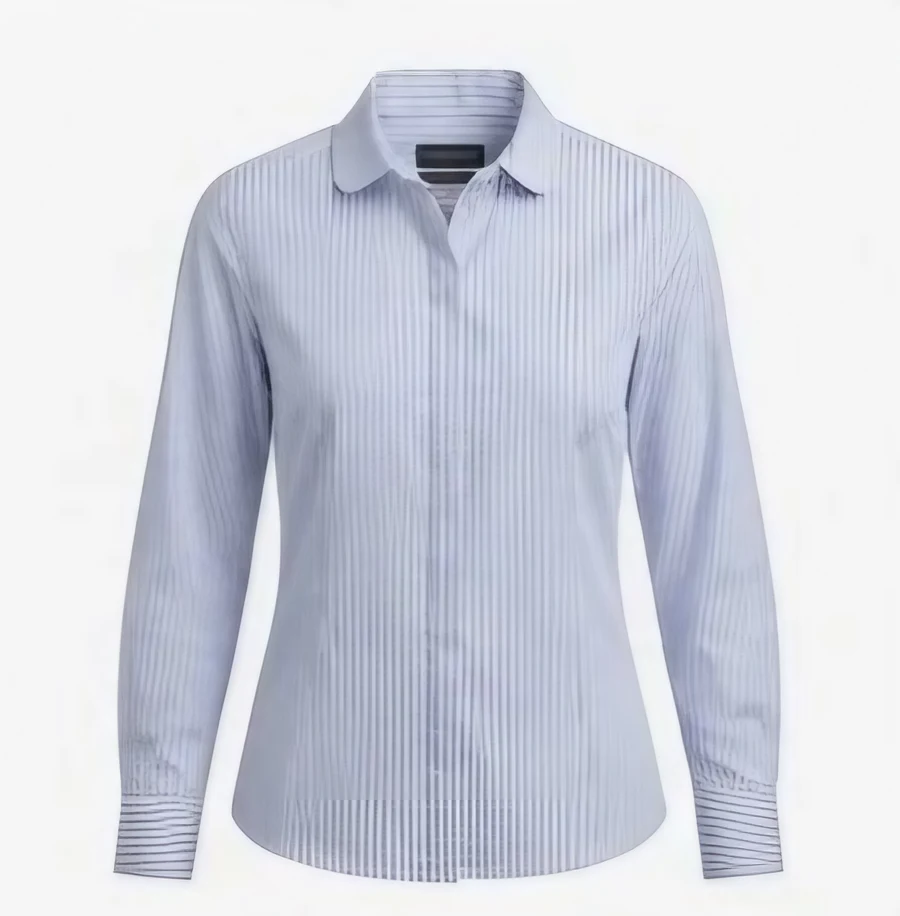
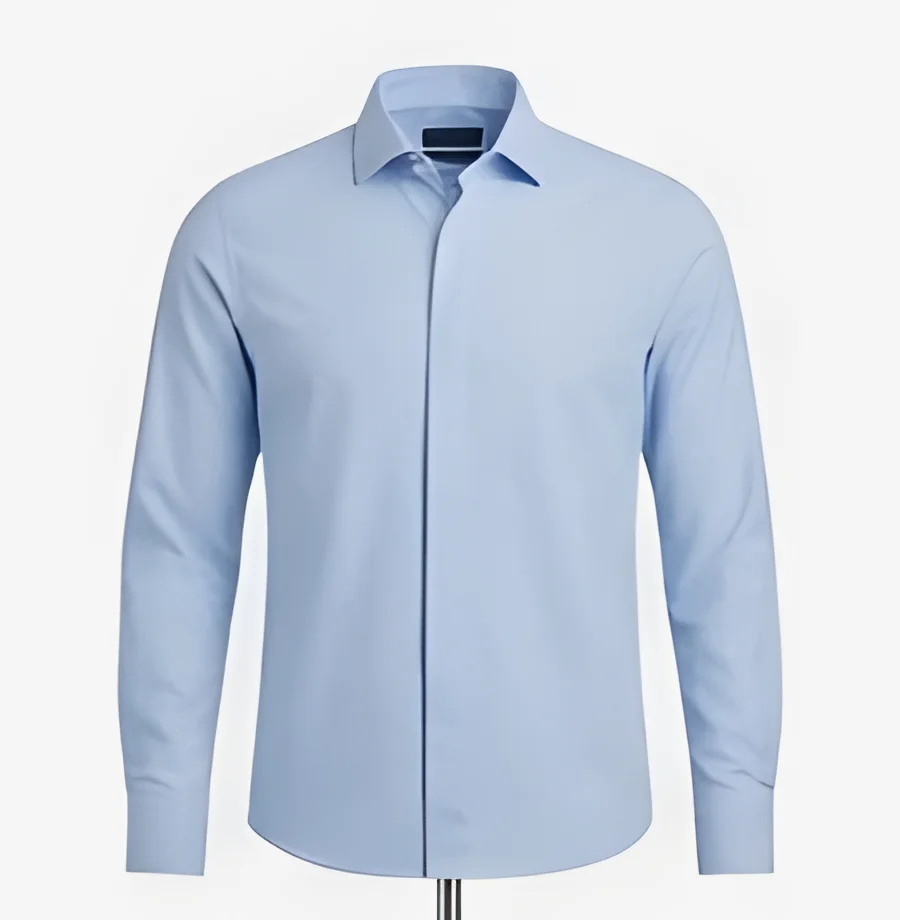
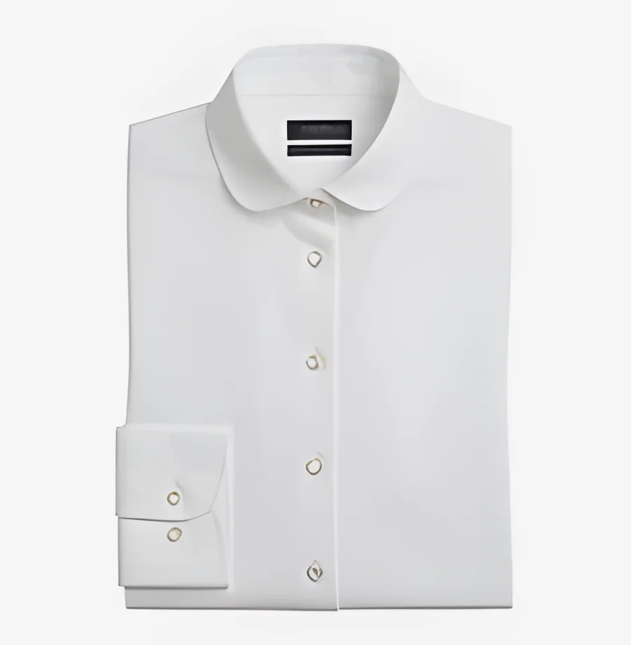
Los imanes se alinean solos: no hace falta el movimiento de pinza.
Por fuera, una camisa de sastrería. Por dentro, la tecnología.
Imanes encapsulados que resisten el lavado y el planchado.
Si el cierre falla, lo resolvemos.
El botón exige un gesto de precisión, la pinza fina. El imán lo reemplaza por un movimiento que cualquiera conserva: acercar.
Llevá un lado de la camisa hacia el otro. No hace falta ver ni apuntar.
Cada par se atrae y se alinea solo, del cuello al ruedo.
La fuerza de cada par está calibrada para que la camisa acompañe tus movimientos.
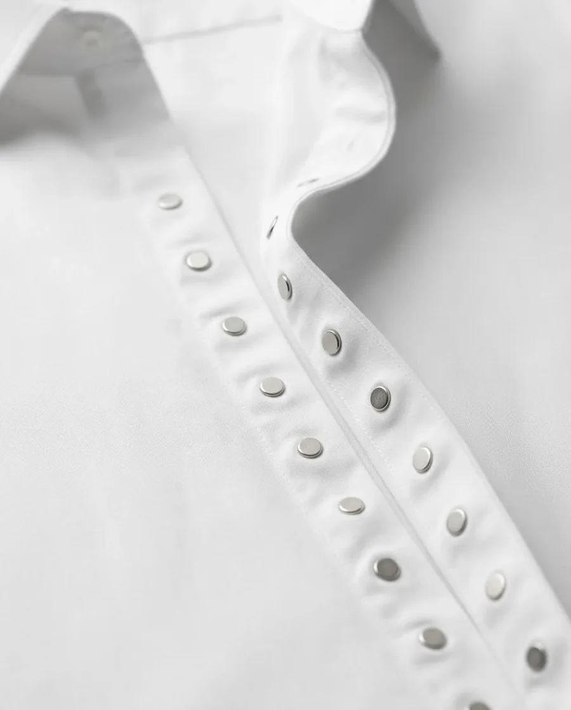
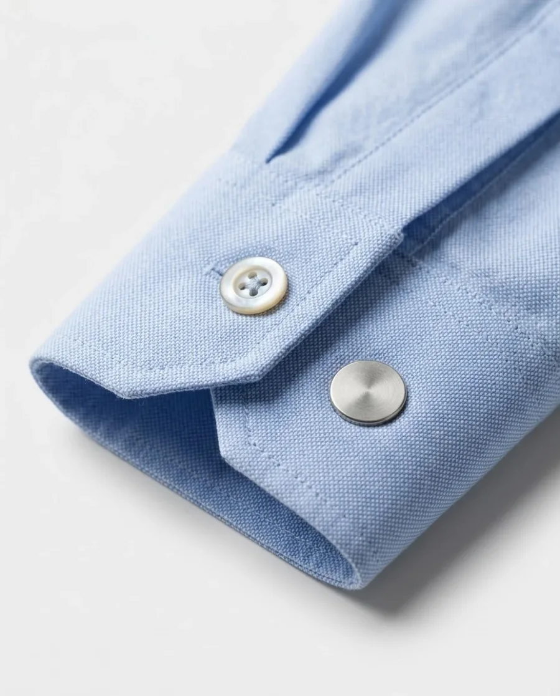
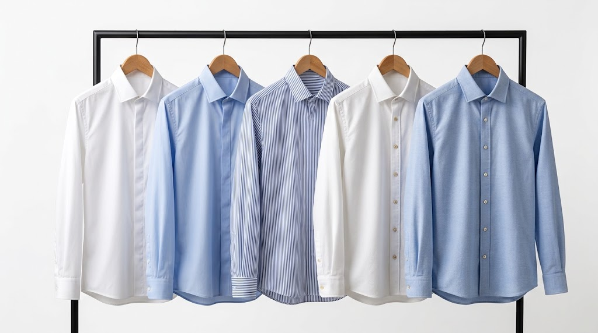
Camisa Esencial blanca$89.900Ver camisa →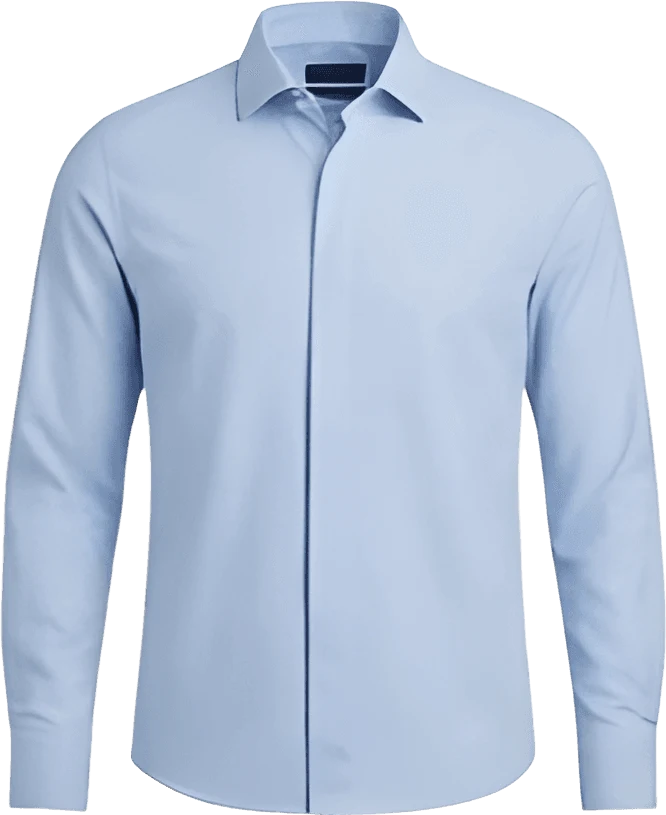
Camisa Esencial celeste$89.900Ver camisa →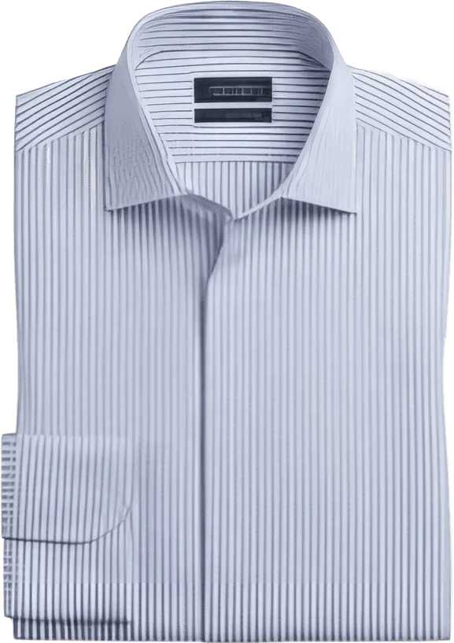
Camisa Esencial rayado fino$89.900Ver camisa →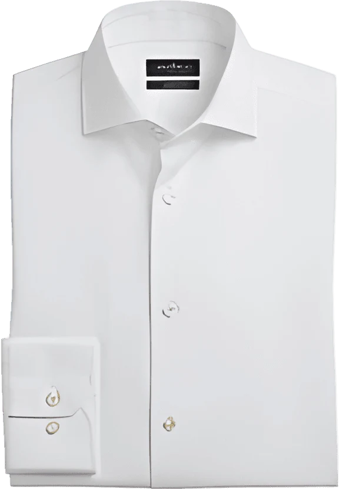
Camisa Signature blanca$119.900Ver camisa →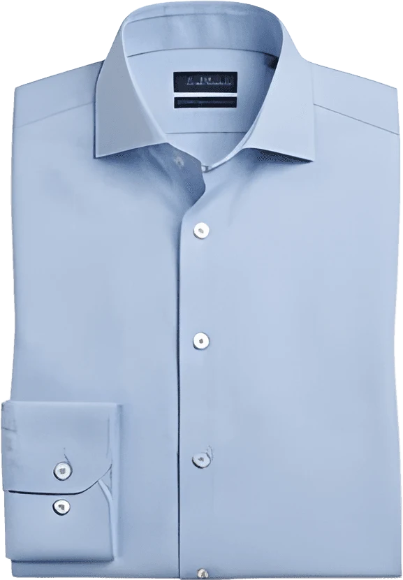
Camisa Signature celeste$119.900Ver camisa →Poplín de algodón y cartera lisa. La camisa de todos los días.
Oxford o algodón egipcio, botones decorativos símil nácar y puños magnéticos.
Cada par de imanes se calibra y se prueba por lote. La camisa acompaña cuando estirás los brazos, te agachás o subís a un colectivo.
Los imanes de neodimio tienen recubrimiento de níquel y van encapsulados y sellados en la cartera. Lavarropas en programa delicado, sin blanqueador.
Si usás marcapasos o un dispositivo cardíaco implantable, mantené los cierres a más de 15 cm del dispositivo y consultá a tu médico. Lo indicamos en la etiqueta y en el packaging.
Si comprás para tu mamá, tu papá o alguien a quien acompañás, la camisa llega en una caja que se abre sin tijeras, con una guía de uso ilustrada. Si el talle no es el correcto, el primer cambio no tiene costo.
Si sos kinesiólogo o terapista ocupacional, sumate al programa Embajadores: recibís una prenda de prueba, la ficha técnica del cierre y un código de beneficio del 10% para tus pacientes.
Quiero sumarmeEn lavarropas, programa delicado, con agua fría o tibia y sin blanqueador. Recomendamos la bolsa de lavado que viene con la línea Signature. Se plancha sobre la cartera a temperatura media.
No: cada imán va encapsulado y su fuerza es la necesaria para cerrar la camisa, no para adherirse a superficies metálicas.
Enviamos a todo el país con operadores logísticos. Si llevás dos camisas o más, el envío es sin cargo.
El primer cambio de talle no tiene costo. Coordinás el retiro desde tu casa y te enviamos el nuevo.
Sí, en 3 y 6 cuotas sin interés con tarjeta de crédito. Si pagás por transferencia, tenés un 10% de descuento.